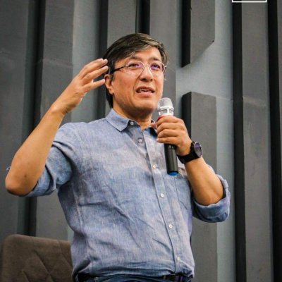

Ғузорлик фермер вилоятда биринчи бўлиб ғалла режасини бажарди
25 май 2023
👁 17 524
Президент Қашқадарёга инвестиция киритган АҚШ компанияси директори билан учрашди
26 май 2023
👁 17 435
Қамашида 51 нафар фуқарони иш билан таъминлаш учун ажратилган субсидия маблағлари талон-тарож қилинди
25 май 2023
👁17 282
Косонлик тадбиркор Қарши шаҳрида 20 млрд сўмлик кўнгилочар мажмуа очди
05 июн 2022
👁 16 953
Косонлик тадбиркор Қарши шаҳрида 20 млрд сўмлик кўнгилочар мажмуа очди
05 июн 2022
👁 16 953
qамашида 51 нафар фуқарони иш билан таъминлаш учун ажратилган субсидия маблағлари талон-тарож қилинди
25 май 2023
👁 16 307
Муҳаррир танлови

"Кўзга кўп тушишдан қўрқиб, имконимиз бор пайтларда ҳам янги шаҳобчалар очишдан ўзимизни тиярдик", - Korzinka асосчиси Зафар Ҳошимов Президент Қарши шаҳридаги супермаркетга ташрифи ҳақида фикр билдирди
25 фев 2023
👁 5 632
Сентябрь 2024 (11)
Август 2024 (21)
Июль 2024 (16)
Июнь 2024 (10)
Май 2024 (16)
Апрель 2024 (12)
Показать / скрыть весь архив